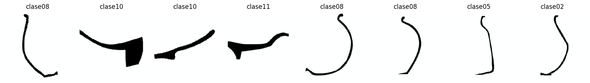
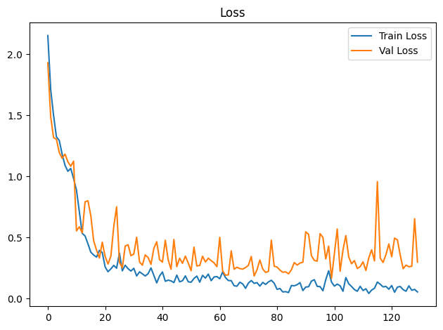
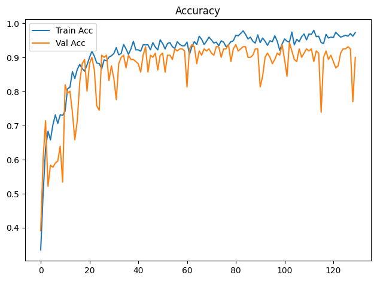
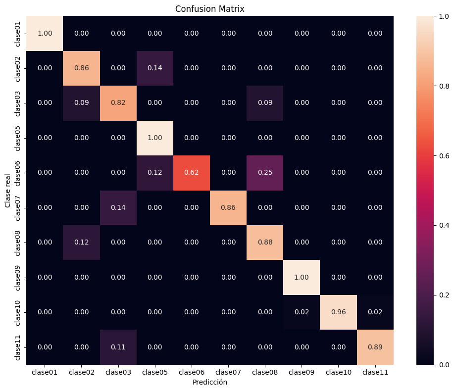

Dispositivo utilizado para procesamiento: CUDA - NVIDIA GeForce GTX 1650Entrenamiento de CNN ResNet-18 con Transfer Learning
Objetivos
- Construir un modelo baseline de clasificación mediante transfer learning con ResNet18 preentrenada.
- Entrenar inicialmente solo la capa clasificadora y descongelar
layer4enUNFREEZE_EPOCHcon una tasa de aprendizaje menor. - Aplicar transformaciones y aumentación de datos al conjunto de entrenamiento.
- Entrenar y validar el modelo registrando loss y accuracy por época.
- Detener el entrenamiento si val_loss no mejora suficientemente durante la paciencia configurada.
- Evaluar el modelo de la mejor época de validación sobre el conjunto de prueba.
- Analizar los resultados mediante accuracy, precision, recall, F1-score, reporte de clasificación y matriz de confusión normalizada.
- Guardar los pesos restaurados de la mejor época de validación (o los finales si se desactiva la parada anticipada).
Dispositivo para procesamiento
División de datos
La pertenencia de cada imagen a train, val o test se lee de la metadata generada por el notebook de división. La relación se realiza mediante ruta_relativa; por tanto, el split no se recalcula aunque cambien la semilla o los parámetros del entrenamiento.
Dataset seleccionado: completos
Directorio de datos: /home/rafael/Dev/vasijas/data/10.cuadrados_divididos_en_train_val_y_test
Metadata de split: data/10.cuadrados_divididos_en_train_val_y_test/metadata.csv
Clases: clase01 clase02 clase03 clase05 clase06 clase07 clase08 clase09 clase10 clase11
Split persistido -> train: 749, val: 161, test: 161
Conteo train por clase: [18, 32, 50, 39, 36, 34, 196, 14, 248, 82]
Pesos de clase: [4.161, 2.341, 1.498, 1.921, 2.081, 2.203, 0.382, 5.35, 0.302, 0.913]Epoch 1/300
Train Loss: 2.1532 | Train Acc: 0.3351 | Val Loss: 1.9301 | Val Acc: 0.3913
Tiempo de epoch: 0:00:08.557698
Epoch 2/300
Train Loss: 1.7112 | Train Acc: 0.5007 | Val Loss: 1.4903 | Val Acc: 0.6025
Tiempo de epoch: 0:00:05.145300
Epoch 3/300
Train Loss: 1.4999 | Train Acc: 0.6328 | Val Loss: 1.3180 | Val Acc: 0.7143
Tiempo de epoch: 0:00:05.143194
Epoch 4/300
Train Loss: 1.3241 | Train Acc: 0.6836 | Val Loss: 1.3044 | Val Acc: 0.5217
Tiempo de epoch: 0:00:05.204307
Epoch 5/300
Train Loss: 1.2942 | Train Acc: 0.6582 | Val Loss: 1.1956 | Val Acc: 0.5839
Tiempo de epoch: 0:00:05.290859
Epoch 6/300
Train Loss: 1.1819 | Train Acc: 0.7023 | Val Loss: 1.1489 | Val Acc: 0.5776
Tiempo de epoch: 0:00:05.128943
Epoch 7/300
Train Loss: 1.0909 | Train Acc: 0.7316 | Val Loss: 1.1828 | Val Acc: 0.5901
Tiempo de epoch: 0:00:05.115041
Epoch 8/300
Train Loss: 1.0420 | Train Acc: 0.7063 | Val Loss: 1.1201 | Val Acc: 0.5963
Tiempo de epoch: 0:00:05.115691
Epoch 9/300
Train Loss: 1.0653 | Train Acc: 0.7316 | Val Loss: 1.0839 | Val Acc: 0.6398
Tiempo de epoch: 0:00:05.207358
Epoch 10/300
Train Loss: 0.9821 | Train Acc: 0.7303 | Val Loss: 1.1250 | Val Acc: 0.5342
Tiempo de epoch: 0:00:05.336857
Epoch 11: se descongela layer4 con lr=1.00e-04 (head lr=1.00e-03)
Epoch 11/300
Train Loss: 0.8883 | Train Acc: 0.7423 | Val Loss: 0.5539 | Val Acc: 0.8199
Tiempo de epoch: 0:00:08.709139
Epoch 12/300
Train Loss: 0.7134 | Train Acc: 0.8077 | Val Loss: 0.5877 | Val Acc: 0.7950
Tiempo de epoch: 0:00:06.993461
Epoch 13/300
Train Loss: 0.5339 | Train Acc: 0.8131 | Val Loss: 0.5380 | Val Acc: 0.8012
Tiempo de epoch: 0:00:06.930940
Epoch 14/300
Train Loss: 0.5124 | Train Acc: 0.8585 | Val Loss: 0.7927 | Val Acc: 0.7391
Tiempo de epoch: 0:00:06.961539
Epoch 15/300
Train Loss: 0.4483 | Train Acc: 0.8385 | Val Loss: 0.8006 | Val Acc: 0.6584
Tiempo de epoch: 0:00:06.822177
Epoch 16/300
Train Loss: 0.3798 | Train Acc: 0.8652 | Val Loss: 0.6787 | Val Acc: 0.7143
Tiempo de epoch: 0:00:06.886158
Epoch 17/300
Train Loss: 0.3564 | Train Acc: 0.8798 | Val Loss: 0.4723 | Val Acc: 0.8261
Tiempo de epoch: 0:00:06.863003
Epoch 18/300
Train Loss: 0.3394 | Train Acc: 0.8678 | Val Loss: 0.3972 | Val Acc: 0.8820
Tiempo de epoch: 0:00:06.819488
Epoch 19/300
Train Loss: 0.3949 | Train Acc: 0.8598 | Val Loss: 0.3312 | Val Acc: 0.8944
Tiempo de epoch: 0:00:06.813232
Epoch 20/300
Train Loss: 0.3774 | Train Acc: 0.8785 | Val Loss: 0.4614 | Val Acc: 0.8012
Tiempo de epoch: 0:00:06.856304
Epoch 21/300
Train Loss: 0.2590 | Train Acc: 0.8999 | Val Loss: 0.3448 | Val Acc: 0.8820
Tiempo de epoch: 0:00:06.840018
Epoch 22/300
Train Loss: 0.2197 | Train Acc: 0.9186 | Val Loss: 0.2828 | Val Acc: 0.9006
Tiempo de epoch: 0:00:06.842771
Epoch 23/300
Train Loss: 0.2430 | Train Acc: 0.9039 | Val Loss: 0.3464 | Val Acc: 0.8634
Tiempo de epoch: 0:00:06.790965
Epoch 24/300
Train Loss: 0.2714 | Train Acc: 0.8838 | Val Loss: 0.5869 | Val Acc: 0.7578
Tiempo de epoch: 0:00:06.818282
Epoch 25/300
Train Loss: 0.2486 | Train Acc: 0.8825 | Val Loss: 0.7510 | Val Acc: 0.7453
Tiempo de epoch: 0:00:06.820712
Epoch 26/300
Train Loss: 0.3724 | Train Acc: 0.8665 | Val Loss: 0.2974 | Val Acc: 0.9068
Tiempo de epoch: 0:00:06.856217
Epoch 27/300
Train Loss: 0.2269 | Train Acc: 0.8932 | Val Loss: 0.2509 | Val Acc: 0.9006
Tiempo de epoch: 0:00:06.973829
Epoch 28/300
Train Loss: 0.2729 | Train Acc: 0.8905 | Val Loss: 0.4296 | Val Acc: 0.9068
Tiempo de epoch: 0:00:06.896397
Epoch 29/300
Train Loss: 0.2445 | Train Acc: 0.9012 | Val Loss: 0.4411 | Val Acc: 0.8323
Tiempo de epoch: 0:00:07.024775
Epoch 30/300
Train Loss: 0.2252 | Train Acc: 0.9052 | Val Loss: 0.3513 | Val Acc: 0.8758
Tiempo de epoch: 0:00:06.812727
Epoch 31/300
Train Loss: 0.2477 | Train Acc: 0.9119 | Val Loss: 0.3635 | Val Acc: 0.8385
Tiempo de epoch: 0:00:06.789506
Epoch 32/300
Train Loss: 0.1849 | Train Acc: 0.9292 | Val Loss: 0.5019 | Val Acc: 0.7764
Tiempo de epoch: 0:00:06.995502
Epoch 33/300
Train Loss: 0.2190 | Train Acc: 0.9079 | Val Loss: 0.2997 | Val Acc: 0.8820
Tiempo de epoch: 0:00:06.848173
Epoch 34/300
Train Loss: 0.2024 | Train Acc: 0.9119 | Val Loss: 0.2730 | Val Acc: 0.9006
Tiempo de epoch: 0:00:06.928070
Epoch 35/300
Train Loss: 0.1848 | Train Acc: 0.9386 | Val Loss: 0.3572 | Val Acc: 0.9068
Tiempo de epoch: 0:00:06.915401
Epoch 36/300
Train Loss: 0.2040 | Train Acc: 0.9252 | Val Loss: 0.3357 | Val Acc: 0.8696
Tiempo de epoch: 0:00:06.847627
Epoch 37/300
Train Loss: 0.2507 | Train Acc: 0.9092 | Val Loss: 0.2802 | Val Acc: 0.9068
Tiempo de epoch: 0:00:06.882617
Epoch 38/300
Train Loss: 0.1900 | Train Acc: 0.9252 | Val Loss: 0.4107 | Val Acc: 0.8944
Tiempo de epoch: 0:00:06.860487
Epoch 39/300
Train Loss: 0.1281 | Train Acc: 0.9479 | Val Loss: 0.4651 | Val Acc: 0.8944
Tiempo de epoch: 0:00:06.862628
Epoch 40/300
Train Loss: 0.1852 | Train Acc: 0.9226 | Val Loss: 0.3185 | Val Acc: 0.8882
Tiempo de epoch: 0:00:06.884986
Epoch 41/300
Train Loss: 0.2177 | Train Acc: 0.9226 | Val Loss: 0.2983 | Val Acc: 0.8820
Tiempo de epoch: 0:00:06.918675
Epoch 42/300
Train Loss: 0.1413 | Train Acc: 0.9186 | Val Loss: 0.4773 | Val Acc: 0.8571
Tiempo de epoch: 0:00:06.900359
Epoch 43/300
Train Loss: 0.1507 | Train Acc: 0.9372 | Val Loss: 0.3181 | Val Acc: 0.9068
Tiempo de epoch: 0:00:06.883233
Epoch 44/300
Train Loss: 0.1446 | Train Acc: 0.9372 | Val Loss: 0.2396 | Val Acc: 0.9317
Tiempo de epoch: 0:00:06.821656
Epoch 45/300
Train Loss: 0.1306 | Train Acc: 0.9372 | Val Loss: 0.4835 | Val Acc: 0.8571
Tiempo de epoch: 0:00:06.847012
Epoch 46/300
Train Loss: 0.1917 | Train Acc: 0.9226 | Val Loss: 0.2612 | Val Acc: 0.9068
Tiempo de epoch: 0:00:06.882624
Epoch 47/300
Train Loss: 0.1372 | Train Acc: 0.9439 | Val Loss: 0.3304 | Val Acc: 0.9006
Tiempo de epoch: 0:00:06.918825
Epoch 48/300
Train Loss: 0.1458 | Train Acc: 0.9306 | Val Loss: 0.2889 | Val Acc: 0.9130
Tiempo de epoch: 0:00:06.841157
Epoch 49/300
Train Loss: 0.1855 | Train Acc: 0.9226 | Val Loss: 0.3474 | Val Acc: 0.8634
Tiempo de epoch: 0:00:06.767753
Epoch 50/300
Train Loss: 0.1374 | Train Acc: 0.9519 | Val Loss: 0.2915 | Val Acc: 0.9068
Tiempo de epoch: 0:00:06.853301
Epoch 51/300
Train Loss: 0.1335 | Train Acc: 0.9413 | Val Loss: 0.2279 | Val Acc: 0.9130
Tiempo de epoch: 0:00:07.051152
Epoch 52/300
Train Loss: 0.1645 | Train Acc: 0.9252 | Val Loss: 0.4207 | Val Acc: 0.8571
Tiempo de epoch: 0:00:06.844433
Epoch 53/300
Train Loss: 0.1839 | Train Acc: 0.9413 | Val Loss: 0.2671 | Val Acc: 0.9068
Tiempo de epoch: 0:00:06.819621
Epoch 54/300
Train Loss: 0.1343 | Train Acc: 0.9439 | Val Loss: 0.2706 | Val Acc: 0.9068
Tiempo de epoch: 0:00:06.927559
Epoch 55/300
Train Loss: 0.1902 | Train Acc: 0.9319 | Val Loss: 0.3464 | Val Acc: 0.8944
Tiempo de epoch: 0:00:06.919482
Epoch 56/300
Train Loss: 0.1672 | Train Acc: 0.9266 | Val Loss: 0.2997 | Val Acc: 0.9255
Tiempo de epoch: 0:00:06.757829
Epoch 57/300
Train Loss: 0.2004 | Train Acc: 0.9466 | Val Loss: 0.3302 | Val Acc: 0.9193
Tiempo de epoch: 0:00:06.821120
Epoch 58/300
Train Loss: 0.1465 | Train Acc: 0.9386 | Val Loss: 0.3102 | Val Acc: 0.9255
Tiempo de epoch: 0:00:06.792291
Epoch 59/300
Train Loss: 0.1764 | Train Acc: 0.9346 | Val Loss: 0.2926 | Val Acc: 0.9255
Tiempo de epoch: 0:00:06.800670
Epoch 60/300
Train Loss: 0.1802 | Train Acc: 0.9346 | Val Loss: 0.2612 | Val Acc: 0.9193
Tiempo de epoch: 0:00:06.836034
Epoch 61/300
Train Loss: 0.1619 | Train Acc: 0.9453 | Val Loss: 0.5012 | Val Acc: 0.8137
Tiempo de epoch: 0:00:06.813490
Epoch 62/300
Train Loss: 0.2169 | Train Acc: 0.9092 | Val Loss: 0.2265 | Val Acc: 0.9255
Tiempo de epoch: 0:00:07.009942
Epoch 63/300
Train Loss: 0.1714 | Train Acc: 0.9319 | Val Loss: 0.1913 | Val Acc: 0.9379
Tiempo de epoch: 0:00:06.793900
Epoch 64/300
Train Loss: 0.1475 | Train Acc: 0.9466 | Val Loss: 0.1936 | Val Acc: 0.9317
Tiempo de epoch: 0:00:06.888435
Epoch 65/300
Train Loss: 0.1466 | Train Acc: 0.9386 | Val Loss: 0.3904 | Val Acc: 0.8820
Tiempo de epoch: 0:00:06.779040
Epoch 66/300
Train Loss: 0.1051 | Train Acc: 0.9626 | Val Loss: 0.2400 | Val Acc: 0.9193
Tiempo de epoch: 0:00:06.841869
Epoch 67/300
Train Loss: 0.1013 | Train Acc: 0.9533 | Val Loss: 0.2565 | Val Acc: 0.9068
Tiempo de epoch: 0:00:06.906775
Epoch 68/300
Train Loss: 0.1336 | Train Acc: 0.9386 | Val Loss: 0.2455 | Val Acc: 0.9255
Tiempo de epoch: 0:00:06.918202
Epoch 69/300
Train Loss: 0.1199 | Train Acc: 0.9479 | Val Loss: 0.2408 | Val Acc: 0.9193
Tiempo de epoch: 0:00:06.812621
Epoch 70/300
Train Loss: 0.0839 | Train Acc: 0.9599 | Val Loss: 0.2542 | Val Acc: 0.9255
Tiempo de epoch: 0:00:06.854950
Epoch 71/300
Train Loss: 0.1268 | Train Acc: 0.9519 | Val Loss: 0.2722 | Val Acc: 0.9130
Tiempo de epoch: 0:00:06.966748
Epoch 72/300
Train Loss: 0.1475 | Train Acc: 0.9426 | Val Loss: 0.3448 | Val Acc: 0.9068
Tiempo de epoch: 0:00:06.932755
Epoch 73/300
Train Loss: 0.1243 | Train Acc: 0.9453 | Val Loss: 0.1851 | Val Acc: 0.9317
Tiempo de epoch: 0:00:06.871076
Epoch 74/300
Train Loss: 0.1304 | Train Acc: 0.9346 | Val Loss: 0.2355 | Val Acc: 0.9317
Tiempo de epoch: 0:00:06.867576
Epoch 75/300
Train Loss: 0.1020 | Train Acc: 0.9493 | Val Loss: 0.3155 | Val Acc: 0.9006
Tiempo de epoch: 0:00:06.828475
Epoch 76/300
Train Loss: 0.1322 | Train Acc: 0.9453 | Val Loss: 0.2420 | Val Acc: 0.9255
Tiempo de epoch: 0:00:06.964772
Epoch 77/300
Train Loss: 0.1159 | Train Acc: 0.9319 | Val Loss: 0.2138 | Val Acc: 0.9255
Tiempo de epoch: 0:00:06.810351
Epoch 78/300
Train Loss: 0.1363 | Train Acc: 0.9372 | Val Loss: 0.2225 | Val Acc: 0.9379
Tiempo de epoch: 0:00:06.963108
Epoch 79/300
Train Loss: 0.1497 | Train Acc: 0.9466 | Val Loss: 0.4782 | Val Acc: 0.8882
Tiempo de epoch: 0:00:06.815335
Epoch 80/300
Train Loss: 0.1257 | Train Acc: 0.9493 | Val Loss: 0.2649 | Val Acc: 0.9255
Tiempo de epoch: 0:00:06.815129
Epoch 81/300
Train Loss: 0.0751 | Train Acc: 0.9653 | Val Loss: 0.2580 | Val Acc: 0.9379
Tiempo de epoch: 0:00:06.805706
Epoch 82/300
Train Loss: 0.0823 | Train Acc: 0.9640 | Val Loss: 0.2328 | Val Acc: 0.9193
Tiempo de epoch: 0:00:06.867317
Epoch 83/300
Train Loss: 0.0542 | Train Acc: 0.9706 | Val Loss: 0.2152 | Val Acc: 0.9255
Tiempo de epoch: 0:00:06.862472
Epoch 84/300
Train Loss: 0.0566 | Train Acc: 0.9786 | Val Loss: 0.2185 | Val Acc: 0.9317
Tiempo de epoch: 0:00:06.949606
Epoch 85/300
Train Loss: 0.0488 | Train Acc: 0.9680 | Val Loss: 0.2026 | Val Acc: 0.9317
Tiempo de epoch: 0:00:06.971688
Epoch 86/300
Train Loss: 0.1069 | Train Acc: 0.9546 | Val Loss: 0.2354 | Val Acc: 0.9006
Tiempo de epoch: 0:00:06.843525
Epoch 87/300
Train Loss: 0.1042 | Train Acc: 0.9599 | Val Loss: 0.2948 | Val Acc: 0.9006
Tiempo de epoch: 0:00:06.789596
Epoch 88/300
Train Loss: 0.1135 | Train Acc: 0.9479 | Val Loss: 0.2741 | Val Acc: 0.9068
Tiempo de epoch: 0:00:06.861702
Epoch 89/300
Train Loss: 0.1302 | Train Acc: 0.9426 | Val Loss: 0.2905 | Val Acc: 0.9255
Tiempo de epoch: 0:00:06.983569
Epoch 90/300
Train Loss: 0.0653 | Train Acc: 0.9666 | Val Loss: 0.2969 | Val Acc: 0.9255
Tiempo de epoch: 0:00:06.802227
Epoch 91/300
Train Loss: 0.0942 | Train Acc: 0.9439 | Val Loss: 0.5462 | Val Acc: 0.8137
Tiempo de epoch: 0:00:06.873343
Epoch 92/300
Train Loss: 0.0968 | Train Acc: 0.9573 | Val Loss: 0.5259 | Val Acc: 0.8447
Tiempo de epoch: 0:00:06.808583
Epoch 93/300
Train Loss: 0.1430 | Train Acc: 0.9479 | Val Loss: 0.3503 | Val Acc: 0.9006
Tiempo de epoch: 0:00:06.875496
Epoch 94/300
Train Loss: 0.1547 | Train Acc: 0.9359 | Val Loss: 0.3128 | Val Acc: 0.9130
Tiempo de epoch: 0:00:06.816419
Epoch 95/300
Train Loss: 0.0997 | Train Acc: 0.9493 | Val Loss: 0.3058 | Val Acc: 0.9006
Tiempo de epoch: 0:00:06.847439
Epoch 96/300
Train Loss: 0.0982 | Train Acc: 0.9466 | Val Loss: 0.5314 | Val Acc: 0.8820
Tiempo de epoch: 0:00:06.832140
Epoch 97/300
Train Loss: 0.0637 | Train Acc: 0.9640 | Val Loss: 0.5002 | Val Acc: 0.8944
Tiempo de epoch: 0:00:06.858183
Epoch 98/300
Train Loss: 0.1551 | Train Acc: 0.9479 | Val Loss: 0.3244 | Val Acc: 0.9130
Tiempo de epoch: 0:00:06.831679
Epoch 99/300
Train Loss: 0.2273 | Train Acc: 0.9212 | Val Loss: 0.4294 | Val Acc: 0.9068
Tiempo de epoch: 0:00:06.879164
Epoch 100/300
Train Loss: 0.1351 | Train Acc: 0.9399 | Val Loss: 0.1660 | Val Acc: 0.9379
Tiempo de epoch: 0:00:06.897675
Epoch 101/300
Train Loss: 0.1018 | Train Acc: 0.9546 | Val Loss: 0.3691 | Val Acc: 0.8944
Tiempo de epoch: 0:00:06.799317
Epoch 102/300
Train Loss: 0.1182 | Train Acc: 0.9479 | Val Loss: 0.5695 | Val Acc: 0.8447
Tiempo de epoch: 0:00:06.866571
Epoch 103/300
Train Loss: 0.1048 | Train Acc: 0.9453 | Val Loss: 0.2233 | Val Acc: 0.9441
Tiempo de epoch: 0:00:06.932774
Epoch 104/300
Train Loss: 0.0597 | Train Acc: 0.9746 | Val Loss: 0.3975 | Val Acc: 0.9193
Tiempo de epoch: 0:00:06.894941
Epoch 105/300
Train Loss: 0.1721 | Train Acc: 0.9372 | Val Loss: 0.5155 | Val Acc: 0.8944
Tiempo de epoch: 0:00:06.944550
Epoch 106/300
Train Loss: 0.1210 | Train Acc: 0.9533 | Val Loss: 0.3412 | Val Acc: 0.8882
Tiempo de epoch: 0:00:06.868845
Epoch 107/300
Train Loss: 0.0986 | Train Acc: 0.9466 | Val Loss: 0.2851 | Val Acc: 0.9255
Tiempo de epoch: 0:00:06.893473
Epoch 108/300
Train Loss: 0.0733 | Train Acc: 0.9613 | Val Loss: 0.3108 | Val Acc: 0.9006
Tiempo de epoch: 0:00:06.885106
Epoch 109/300
Train Loss: 0.0597 | Train Acc: 0.9693 | Val Loss: 0.2462 | Val Acc: 0.9130
Tiempo de epoch: 0:00:06.810487
Epoch 110/300
Train Loss: 0.1001 | Train Acc: 0.9519 | Val Loss: 0.2613 | Val Acc: 0.9255
Tiempo de epoch: 0:00:06.929499
Epoch 111/300
Train Loss: 0.0659 | Train Acc: 0.9693 | Val Loss: 0.3005 | Val Acc: 0.9193
Tiempo de epoch: 0:00:06.830897
Epoch 112/300
Train Loss: 0.0799 | Train Acc: 0.9680 | Val Loss: 0.2297 | Val Acc: 0.9255
Tiempo de epoch: 0:00:07.004183
Epoch 113/300
Train Loss: 0.0419 | Train Acc: 0.9800 | Val Loss: 0.3328 | Val Acc: 0.8882
Tiempo de epoch: 0:00:06.919552
Epoch 114/300
Train Loss: 0.0693 | Train Acc: 0.9613 | Val Loss: 0.3991 | Val Acc: 0.9193
Tiempo de epoch: 0:00:06.990675
Epoch 115/300
Train Loss: 0.0845 | Train Acc: 0.9626 | Val Loss: 0.3085 | Val Acc: 0.9130
Tiempo de epoch: 0:00:06.850999
Epoch 116/300
Train Loss: 0.1350 | Train Acc: 0.9439 | Val Loss: 0.9575 | Val Acc: 0.7391
Tiempo de epoch: 0:00:06.884038
Epoch 117/300
Train Loss: 0.1174 | Train Acc: 0.9413 | Val Loss: 0.3312 | Val Acc: 0.9006
Tiempo de epoch: 0:00:06.955193
Epoch 118/300
Train Loss: 0.0955 | Train Acc: 0.9680 | Val Loss: 0.2955 | Val Acc: 0.9193
Tiempo de epoch: 0:00:06.749607
Epoch 119/300
Train Loss: 0.0992 | Train Acc: 0.9573 | Val Loss: 0.3594 | Val Acc: 0.8944
Tiempo de epoch: 0:00:06.913697
Epoch 120/300
Train Loss: 0.0764 | Train Acc: 0.9599 | Val Loss: 0.4473 | Val Acc: 0.9068
Tiempo de epoch: 0:00:06.802711
Epoch 121/300
Train Loss: 0.1065 | Train Acc: 0.9586 | Val Loss: 0.3420 | Val Acc: 0.8882
Tiempo de epoch: 0:00:06.888945
Epoch 122/300
Train Loss: 0.0517 | Train Acc: 0.9746 | Val Loss: 0.4950 | Val Acc: 0.8696
Tiempo de epoch: 0:00:06.924555
Epoch 123/300
Train Loss: 0.0937 | Train Acc: 0.9666 | Val Loss: 0.4807 | Val Acc: 0.8758
Tiempo de epoch: 0:00:06.930239
Epoch 124/300
Train Loss: 0.0986 | Train Acc: 0.9599 | Val Loss: 0.3534 | Val Acc: 0.9130
Tiempo de epoch: 0:00:06.817565
Epoch 125/300
Train Loss: 0.0727 | Train Acc: 0.9626 | Val Loss: 0.2442 | Val Acc: 0.9255
Tiempo de epoch: 0:00:06.829965
Epoch 126/300
Train Loss: 0.0599 | Train Acc: 0.9653 | Val Loss: 0.2735 | Val Acc: 0.9255
Tiempo de epoch: 0:00:06.932830
Epoch 127/300
Train Loss: 0.1039 | Train Acc: 0.9626 | Val Loss: 0.2607 | Val Acc: 0.9317
Tiempo de epoch: 0:00:06.837309
Epoch 128/300
Train Loss: 0.0681 | Train Acc: 0.9706 | Val Loss: 0.2639 | Val Acc: 0.9255
Tiempo de epoch: 0:00:06.920188
Epoch 129/300
Train Loss: 0.0748 | Train Acc: 0.9626 | Val Loss: 0.6534 | Val Acc: 0.7702
Tiempo de epoch: 0:00:06.898809
Epoch 130/300
Train Loss: 0.0542 | Train Acc: 0.9733 | Val Loss: 0.2986 | Val Acc: 0.9006
Tiempo de epoch: 0:00:06.841661
Parada anticipada en epoch 130: 30 épocas sin mejora suficiente de val_loss.
Se restauran los pesos de epoch 100 (val_loss=0.1660).
Tiempo total de entrenamiento: 0:14:41.924874

Test Acc: 0.9006
precision recall f1-score support
clase01 1.00 1.00 1.00 4
clase02 0.50 0.86 0.63 7
clase03 0.75 0.82 0.78 11
clase05 0.80 1.00 0.89 8
clase06 1.00 0.62 0.77 8
clase07 1.00 0.86 0.92 7
clase08 0.93 0.88 0.90 42
clase09 0.75 1.00 0.86 3
clase10 1.00 0.96 0.98 53
clase11 0.94 0.89 0.91 18
accuracy 0.90 161
macro avg 0.87 0.89 0.87 161
weighted avg 0.92 0.90 0.90 161

Modelo guardado en: output/models/model_resnet18_bs16_lr1e-3_weighted_unfreeze.pth